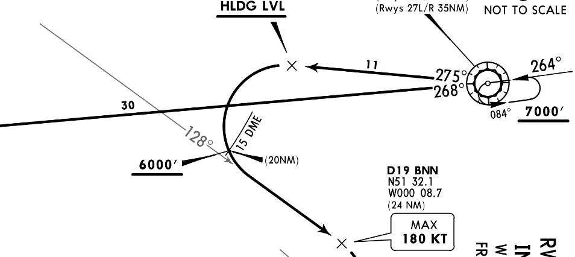
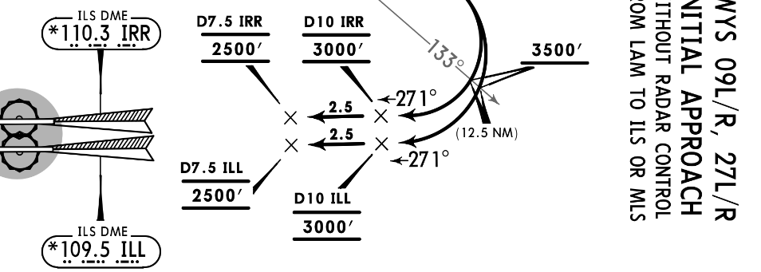

My breath was quickly fogging up the window, the bit of plastic that never seems strong enough to hold all the air out at 30,000 feet.
Outside three other blinking lights traced an imaginary ellipse in the black. A helter-skelter ellipse, cascading down in pecking order.
I couldn’t tell how high we were, because the inflight display was all in Arabic, and I can’t read right-to-left, let alone decipher their script. So I sat and traced the ellipse in my mind.
The other lights shifted slowly, then shot by, like one of those computer animations of a friendly satellite passing the asteroid belt, or a malicious asteroid skirting human civilisation. They always rocket past.
The kid on my left finally looked up from his screen, the third time in eight hours. Why he picked the aisle seat for a flight to this, the greatest city in all the world, at night, I don’t know.
I shifted over a little so he could have a slice of the view. My breath misted on the next part of the window, and I held it, then breathed into my cupped hand, holding my internal moisture like a bird’s egg.
***
The pilot didn’t say anything except “We’ll be held for ten minutes. Thank you for your patience”. Maybe he was used to seeing it all out of the cockpit windows, widescreen.
I went up in the cabin of a jetliner once, years ago, before 9/11 and all that. Mum just asked and they waved me in. We were going over the French Alps. Quite a view, certainly widescreen. I don’t remember much else from that time.
Then they dimmed the lights again, the engine note went down, I knew we must be coming out of the holding pattern. When that happens you arc back across the sky, half-circle the ellipse, stream down to the PAPI lights next to the motorway. That’s the good bit. That’s why I had the window seat.
***
The kid seemed disinterested again so I pressed all of my face into the plastic and tried to spot the landmarks I knew only from below.
Nothing, nothing, nothing. Then - Olympic Stadium!
I hadn’t even been inside - too many people, too expensive, too much to take in - but I knew the slivers of grass around the brick-red oval from the omniscient eye of the television.
I’d never seen it as beautiful but from the air it undeniably was. You couldn’t see the giant ugly red monstrosity-sculpture next to it, which helped. That helped a lot.
The other Olympic buildings clustered around it, holding their distance, like awkward friends at a party.
They looked pleasing but not sensational.
I guess this is how the architects must have seen it, from high up, the aerial elevation. It looked better this way, I thought.
***
We banked right steeply, over the canal, heading West-North-West.
The dark spots, perfect polygonal ink-spots, loomed out against the orange lights. Public parks.
Then a bigger dark spot, bisected all the while. The river.
We were East, so a gawky group of pointy skyscrapers slid past to say hello.
Then not quite so East, so I looked at the boats wavering on the river, and the quiet lands further up.
Then almost Central, so more tall buildings; the one that looks like a pickle, the one that looks like an onion, the one that looks like a cheesegrater, the others whose names I’ve forgotten.
They stood out, but not in a modest way. I preferred looking at the white lights pulsing through the orange streets that skirted them.
A train meandered in over the river, like a giant illuminated centipede. I watched and it slid out of sight, underground, just like a centipede would.
Then we were West, and all the buildings were squat and neoclassical.
We passed over the park next to our house, the darkest thing on the map, enclosing the brightest thing on the map by far.
I showed the kid the bright lights - the theme park, the rides. He asked me the name, I told him, he said he hadn’t been, I said not to.
***
Then we were really West, the bit I like, where people come to live, not because it’s fashionable, just because it’s a place to live.
All the cars streamed out of the city, migrating in the dusk. I checked off the roundabouts in my head.
The river curved away again and that was the last I saw of it.
We were definitely lower now, and well out of the ellipse. Landing soon.
***
Then I looked away and back again and I saw the roads near A.’s house, and it all hit me, all at once, like the blunt end of a tree trunk in the ribs. I thought about all the people I’d ever known, all the friends I’d ever made, all the girls I’d ever loved, sleeping quietly under this inky black January sky, no rain, just chilly air, early dusk and early dawn in the brightest city in the world. They had no idea I was looking down at them - how could they? - but I felt responsible and distant and close-and-far all at once, and my chest heaved and I pressed my face closer to the plastic and tried to summon my brain to take it all in, save it all perfectly, carbon copy this image of the orange lights on the black background that made me feel this way. I lived here no longer, an outsider coming back to my hometown which was not my hometown, moisture in my eyes for the only place I’d ever had in my heart, the city of infinite lights shimmering in a sodium-vapour haze behind the plane as it scooped down out of the holding pattern, broke the ellipse.
Then we landed, and the pilot said, “Welcome to London Heathrow. The local time is 7:28. The air is 8º. Please keep your seatbelt fastened until we come to a complete stop.”
